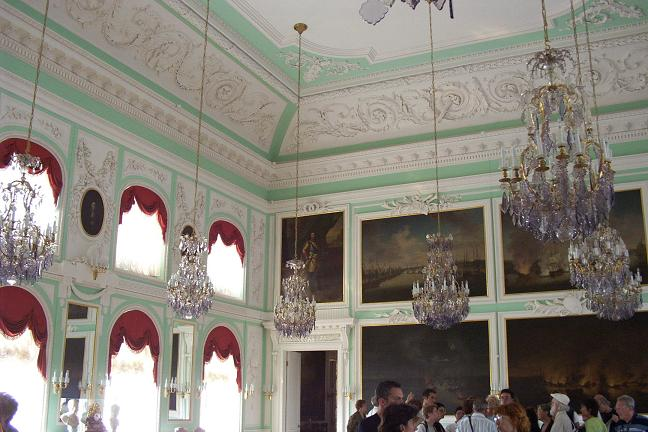
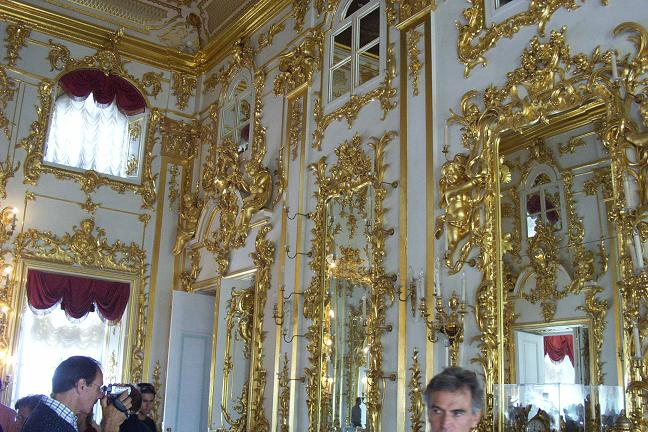
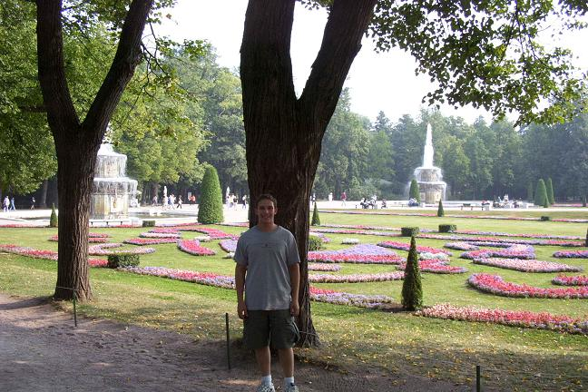
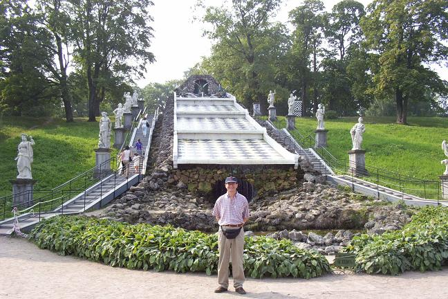

St. Petersburg: Peterhof (Petrodvorets), Part 2
The first two pictures are of the inside of the Peterhof Palace, showing the lavish interiors that have been reconstructed from the Nazi rubble. The latter two are of the beautiful grounds.




Back to St. Petersburg Section
Go to the trip homepage